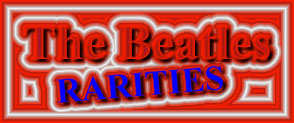

 |
 |
|
Beatles Rarities: Online! This is one of the largest sites of viewable Beatles collectibles, records and memorablilia on the internet. It includes photos and information on many of the top Beatles rarities - some never before pictured, compared or described anywhere. Near the bottom of this page, I've added a link-menu system to another comprehensive Beatles rarities site. Thanks to the following contributors: M. McGeary, Perry Cox, Steve Clifford |
| Created for the Beatles and sold in the Apple Boutique this 1967-68 watch is one of the most desireable collectibles of all Beatles memorabilia. | |
| "The Beatles Story" lp on DAT | The Beatles' Story Digital Audio Tape (DAT) safety master, with tones. No better copy of this recording exists! This album has never been released on any tape or non-LP format. In 1996 Capitol had planned to release this album commercially as a pre-recorded DAT tape, audio cassette and possibly CD. Perhaps because of the limited market for commercial DAT albums, and/or because they were concerned about releasing a high quality digital copy in the marketplace, the project was scrapped. The DAT was mastered from the original The Beatles' Story master tapes. A promotional audio cassette was also made but not distributed. Near mint to mint condition, a truly one-of-a-kind item! |
| 2002 McCartney Crew Shirts | Show are a couple different types of tour shirts worn by the local crews and tour staff including a special shirt to celebrate Barrie Marshall's birthday. He is a long time McCartney tour manager. |
| Paul autograph | Paul McCartney autograph. 1st name only. Signature was obtained at the National Film Theatre, London on the 12th July 2001, outside the theatre as Paul was going in to listen to a talk by Steve Buscemi and a showing of his film Reservoir Dogs. |
| Peter Noone autographs | Peter Noone, "Herman" of Herman's Hermits. Some photos of my meeting with him along with some of the items he autographed for me. |
| Mick Jagger Autograph | 31st March 1965: Gothenburg, Sweden, Park Avenue Hotel. Press conference. This is during their Scandinavian Tour. Here's the itinerary while they were there. Here also is a scan of the very rare tour book and concert ticket for the Sweden tour. |
| Ringo Autograph | 1998 "Vertical Man" double-sided poster autographed by Ringo for an employee at Polygram Records. |
| Paul and Linda McCartney Autographs | Wings 1978 promotional card signed by Paul and Linda during the
"Back To The Egg" sessions. Pictured from Left to Right: Steve Holly, Denny Laine, Linda, Paul and Laurence Huber. |
| Late 1962 or early 1963 fully signed Parlophone Promotional Card. | |
| Lennon Publishing Agreement | October 15th 1968 signed Publishing Agreement signed by John Lennon and Neil Aspinall |
Cancelled Checks |
John Lennon - July 4th 1970 - A check written to Southern
Electricity, probably for a power bill. George Harrison -March 21st 1972 - Drawn from the National Westminster Bank Limited. Signed in green pen. Ringo Starr - January 8th 1973 - Drawn from the National Westminster Bank Limited. Signed in purple felt. |
| 1993 River Group Cards | Information on the 1993 trading cards. 1st set of trading cards since the 60's. |
| Photo of John and Yoko | One of the last professional photos taken of John and Yoko before John was killed in 1980. |
| George Harrison Sun Glasses | Ultra rare promo sunglasses from the 1976 release of the album 33 /1/3 |
| Vee-Jay Record Catalogs | Veejay Record catalogs from 1964. Did you know there were two different ones? These are very rare and much sought after. Take a look see. |
| Somewhere In England |
Here's the original artwork for George Harrison's "Somewhere In England" album cover. My girlfriend bought this for me last Christmas (1999) along with the inner photo sleeve. Below is a description of this LP from Perry Cox. VERY RARE ORIGINAL FIRST VERSION 1980 ALBUM COVER SLICK ! INCREDIBLY RARE ORIGINAL 1980 AUTHENTIC COVER ALBUM SLICK FOR THE FIRST ISSUE OF THE HIT GEORGE HARRISON ALBUM, 'SOMEWHERE IN ENGLAND'! (Dark Horse DHK-3492! THIS IS THE LP COVER AS IT WAS ORIGINALLY INTENDED FOR RELEASE UNTIL JOHN'S UNTIMELY PASSING AT THE END OF 1980. AT THAT TIME, THE RELEASE OF THE ALBUM WAS POSTPONED FOR THE ADDITION OF THE SONG, 'ALL THOSE YEARS AGO'! WHICH WAS A BIG HIT TRIBUTE FOR JOHN LENNON! A FEW OTHER SONGS WERE SWAPPED OUT ON THE LP AS WELL FOR THE LATER RELEASE!! THIS IS AN AUTHENTIC ORIGINAL FULL COVER SLICK WITH THE COLOR CODES AND INFO. IN THE BORDER AREAS! VERY RARE INDEED WITH ONLY A FEW DOZEN KNOWN TO EXIST! CHECK THIS BEAUTY OUT! WHAT A GREAT PICTURE OF GEORGE ON IT! AND SO VERY RARE AS ONLY ABOUT 4 KNOWN ORIGINAL EXAMPLES EXIST! THIS IS ONE OF THEM!! THIS IS GUARANTEED THE ORIGINAL SLICK AND NOT THE FAKE ONE! YOU CAN CLEARLY SEE THE DIFFERENCE BETWEEN THE FAKE LP AND THE ORIGINAL COVER ART. THE FINAL RELEASE VERSION OF THIS ALBUM LOOKS MUCH DIFFERENT AND IN MY OPINION, NOT NEARLY AS NICE AS THIS EARLY VERSION COVER!! SO HERE IT IS!! THE LP COVER AS IT WAS INTENDED!! SIZE OF THE COVER ART SLICK IS APPROX. 19" X 27". CONDITION IS TRULY NEAR MINT AND FLAT!! (Note: The new Capitol Records release of the CD now uses this cover!! Finally, they could see how much better the first cover was!) |
| Yellow Sub promo dolls | These are the very scarce Todd McFarlane promo Yellow Sub figures. These were given out at the New York Toy Fest in early (1999) |
| Apple Lighter | This is a cool item. An original late 60's Apple Records Zippo lighter. |
| Apple Matches | Here is an original Apple Records matchbook set from the late 1960s, given away in packages of four as a Christmas gift from Apple. |
| Apple Money Clip | Original 60's money clip. |
| Original Yellow Sub Corgis | 1968 production models of Corgi's Yellow Submarine. The first model didn't last last and the design was changed in the same year. Take a look! |
| Promotional photo- | A rare 1966 Capitol Records promotional photo for the Yesterday and Today lp. Trunk cover. |
| Yellow Sub Hangers | 1968 Closet Carnival Yellow Submarine Picture Hangers. |
| Press Pass | August 23, 1964 Hollywood Bowl Press Pass |
| Anthology "Sneak Preview" | One of the coolest Anthology collectibles to be released. |
| Flip Your Wig | The 1964 Milton Bradley Beatles board game |
| The Beatles Record Player | Sold in 1964 for $29.95. 5000 were made |
| Cartoon envelope | King Features, 1965 promotional envelope for the Beatles cartoons. |
| Buttons | 1964 Green Duck gumball machine 1c Beatles buttons. |
| Fan Club Publications | Here's a selection of original Fan Club Publications for your viewing pleasure. |
| The Beatles Sportstime 1996 Signature Redemption cards |
The rarest of the whole set |
| Remco Dolls | Remco released the dolls in either hard bodies or soft in 1964 |
| Flaming Pie Page | McCartney's Flaming Pie informational and collectibles page. |
| Disc a Go-Go | Premier Issue of a Northwest Publication featuring the Beatles Northwest appearance in Portland, OR 1965 |
| The Beatles Disk-Go-Cases | Round cases for carrying/storing 45rpm disks |
| Beatle Bugles | The Beatle Bugles (megaphones) 1964 |
| " In His Own Write" | An autographed copy of the UK third printing |
| Bongos | Beatles Bongos from Mastro Industries (1960's) |
| HELP Poster | Original 1965 UK HELP movie poster |
| ABC Promotional package | Sent out to the affiliate television stations to sell commercial time to sponsers. Of course, all commerical spots were sold out very quickly. Very hard to get piece. Although it's not a record, it looks like one. Inside is a great looking poster of the Beatles with many of their album covers pictured. Inside of the jacket it has an introduction to the Beatles, what they've achieved and much more. Very cool piece |
| Shea Stadium | Unused concert ticket from 1966 |
| Color photo card wrapper | Original gum wrapper from Topps Bazooka |
| Hard Days Night card wrapper | Original gum wrapper from Topps Bazooka for the B/W set of cards |
| Wrapper | Beatles HOOD Ice Cream Bar (circa 1964) |
| HOOD Ice Cream Box | Box containing 6 Beatle ice cream bars, yum. |
| promo cards | Full set of the from the 1993 Beatles Collection by the River Group |
| The Beatles "Butcher Covers" | Has its own main site |
| "Introducing The Beatles" | A Comprehensive Guide to this VJ release |
| The Beatles on Oldies 45 | A subsidiary of Vee-Jay Records, 4 singles were released on the Oldies 45 label in 1964 |
| 1966 "I Apologize" 12" interview album | This is a vinyl recording of the 1966 Beatles press conference where John apologizes for his "more popular than Jesus" statement. |
| 1964 flexi-discs | The Beatles, The Beach Boys, and The Kingston Trio flexi-disc including the Tri-fold disc, the black disc and the original mailing envelope w/ insert |
| Rare UA-750 United Artists 45 sleeve | A Hard Days Night / I Should Have Known Better by George Martin and his Orchestra. 1964 issue |
| Paul McCartney's 'Wingspan Hits & History' | This is an official Abbey Road Reference (2) CD-R ACETATE set for Paul McCartney's 'Wingspan Hits & History' release. Prepared at the Abbey Road Studios on 28 March 2001, in Room 13. ***Mega Rare*** |
| "From a Lover To A Friend" CD single | Rare Capitol McCartney release quickly withdrawn from the market. Click on link to read more about it. |
| EMI100 - The First Centenary | 1997 promotional compilation of 45 songs on 2 CDroms spanning EMI's 100 recording history |
| Flaming Pie Advance CD | Rare Flaming Pie advance CD. Much fewer numbers were pressed than the standard promotional CD's. Includes all 14 tracks and comes with a special white cardboard holder with a sticker listing the contents |
| We Can Work It Out - on Capitol Starline | Super rare - Read more about it |
| Ain't She Sweet Lp | Rare promotional version of this lp |
| Four by the Beatles | (Capitol EP) Very rare, this one is in original shrinkwrap |
| Can't Buy Me Love | Very rare in mint condition |
| Kansas City/Boys | Original 1965 Green Starline, one of 6 titles |
| The Beatles
Anthology 2 Multimedia CD-ROM Press kit |
Front/back photo. Includes press releases, high-resolution photographs and other neat things |
| MGM Stock and promo's with sleeves | Separate page dedicated to the MGM releases |
| Ultra rare 1971 Apple promo | Happy Xmas/Listen, the Snow is Falling. , stone mint! Purchased from Phil Spector's collection. Rarest Lennon promo |
| Thank You Girl/From Me To You | VJ-522 promo (very rare) |
| Thank You Girl | VJ-522 stock copy |
| Do You Want to Know A Secret | Very rare promo in Near Mint condition VJ-587 |
| VJ EP 1-903
Promo Photo of rare promo sleeve |
The Beatles a.k.a. Souvenir Of Their Visit To America VeeJay VJEP 1-903 March 23, 1964 [ Misery / A Taste Of Honey / Ask Me Why / Anna (Go To Him) |
| THIS IS PROBABLY THE MOST HISTORIC BEATLES RECORD ON THE PLANET! INDEED IT IS ONE OF THE MOST SIGNIFICANT SINGLES OF ALL TIME! A VERY NICE COMMERCIAL COPY OF THE VERY FIRST RECORD THE BEATLES APPEARED ON IN THE U.S. FROM APRIL, 1962!! 'MY BONNIE/The Saints' (Decca 31382). THIS WAS A MILD HIT IN GERMANY AND ENGLAND IN 61/62, SO POLYDOR ENLISTED IT'S U.S. AFFILIATE FOR POLYDOR AT THE TIME, DECCA RECORDS, TO GIVE THIS RECORD A TRY IN THE U.S.!! IT WENT ABSOLUTELY NOWHERE ON THE CHARTS OF COURSE AND THE RESULT IS ONE OF THE RAREST BEATLES 45s AROUND! NOT CONVINCED THE NAME 'BEATLES' WAS MARKETABLE, DECCA COMPLIED WITH POLYDOR'S SUGGESTION TO CHANGE THEIR NAME TO 'THE BEAT BROTHERS' ON THE LABEL! PRIMARILY A BACKING BAND TO TONY SHERIDAN (POPULAR 'ELVIS STYLE' GERMAN SINGER AT THE TIME), THIS RECORD TOTALLY BOMBED ON THE U.S. MARKET AND GAVE NO INDICATION OF THINGS TO COME FOR THE BOYS!... | |
| My Bonnie/The Saints (promotional copy) | Decca pink label promotional disc of the record above |
| Leave My Kitten Alone | Rare US Picture sleeve for unreleased recording by Capitol - B 5439 |
| Love Me Do/P.S. I Love You | 45-R 4949 original Parlophone promo copy |
| Love Me Do/P.S. I Love You | Original 1963 English release with center still intact |
| Friday Night / I'd Think It Over - T9012 | |
| ANNA DJ #8 | RAREST of the VJ stock & promos. |
| Please Please Me | (VJ 498 White label promo with rare spelling of "Beattles".) |
| Please Please Me/Ask Me Why | Vee Jay 498 black label with color band. The company logo is a set of brackets surrounding the letters VJ and the words "VEE JAY RECORDS." This is called the "brackets logo." The artist's name is correct, and the authors' credits are much smaller than the song title. Issued in late 1963.) |
| Please Please Me/Ask Me Why | VG++ stock copy of the Oval Label, uncorrectly spelled version of Beatles with two TT's VJ-498. |
| Please Please Me/Ask Me Why | VG+++ copy of the Oval Label, correctly spelled version of the VJ-498. |
| Please Please Me Rare stock sleeve |
(VJ 581) Rare picture sleeve The Promotional Issues |
| Please Please Me |
Ultra rare VJ-581 Purple label copy in Near Mint condition. |
| Please Please Me - VJ 581 Promo | Rare promotional disk - this one is near mint |
| Undocumented Columbia Records pressing of Please Please Me / From Me To You / Description comes from www.fab4collectibles.com | |
| The VJ Christmas Sleeve | Accompanied various VJ Beatle 45s at Christmas, 1964-65 |
| Sweet Georgia Brown | (Tony Sheridan with the Beatles) Autographed by Tony |
| Photo of the disk. 52 324B | |
| My Bonnie/The Saints | On Polydor 24 673A - sleeve autographed by Pete Best at L.A. Beatlefest |
| Walking Through the Park with Eloise | (McCartney). Hard to find sleeve and disc esp. in near mint condition |
| Do You Want To Know A Secret | (VJ 587) |
| We Can Work It Out/ Day Tripper | |
| Fab Four on Film | Capitol B-5100 - rare commercial copy with interview. Never made it to the stores |
| Sie Liebt Dich/I'll Get You | The Swan singles have been widely counterfeited.
Original copies should have the master number stamped into the trail-off by
machine along with the words "MASTERING RECO-ART PHILA." OR the words Virtue
Studios should be etched into the trail-off. Any copies with bubbles in the
vinyl or with pock marked or blurred labels are fakes. All "Sie Liebt Dich" singles have DON'T DROP OUT on the label |
| Sie Liebt Dich/I'll Get You | |
[Two label versions side by side!] |
|
| Hey
Jude/Revolution Pocket Disc by Americom |
Read about the Pocket Disc here |
| Evatone Soundsheet | To accompany "The Complete Beatles U.S. Record Price Guide " limited 1st edition by Cox/Lindsay in 1983, an Evatone Soundsheet was issued with the guide. The flexy record was red with the songs, "Til There Was You / Three Cool Cats. 1st Editions were limited to only 4800 copies. |
| Beatles Vs. The Four Seasons | Still in shrink wrap. Mono - 1964 VeeJay Records |
(This section links to another site. You'll have to back up to "get back" to this site)
| Another great resource for collectors is at "Songs, Pictures and Stories of the Beatles". Here's their Quick Find Menu. Click the button at the left to access it. |
{kind=link}
{kind=link}
{kind=link}
{kind=link}
{kind=link}
{kind=link}
{kind=link}
{kind=link}
{kind=link}
{kind=link}
{kind=link}
{kind=link}
{kind=link}
{kind=link}
{kind=link}
{kind=link}
{kind=link}
{kind=link}
{kind=link}
{kind=link}
{kind=link}
{kind=link}
{kind=link}
{kind=link}
{kind=link}
{kind=link}
{kind=link}
{kind=link}
{kind=link}
{kind=link}
{kind=link}
{kind=link}
{kind=link}
{kind=link}
{kind=link}
{kind=link}
{kind=link}
{kind=link}
{kind=link}
{kind=link}
{kind=link}
{kind=link}
{kind=link}
{kind=link}
{kind=link}
{kind=link}
{kind=link}
{kind=link}
{kind=link}
{kind=link}
{kind=link}
{kind=link}
{kind=link}
{kind=link}
{kind=link}
{kind=link}
{kind=link}
{kind=link}
{kind=link}
{kind=link}
{kind=link}
{kind=link}
{kind=link}
{kind=link}